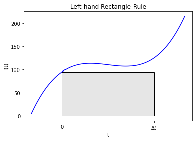
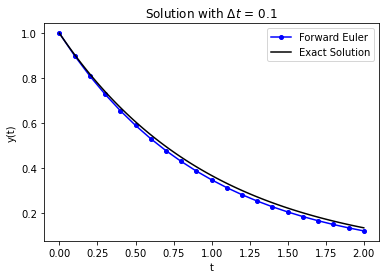
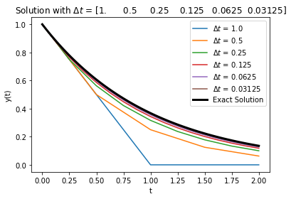
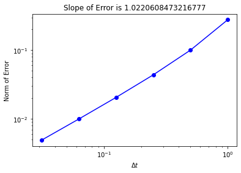
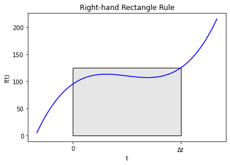
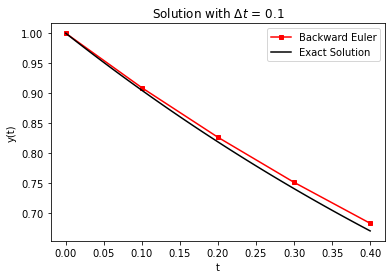
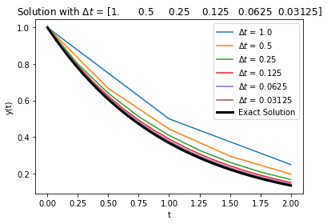
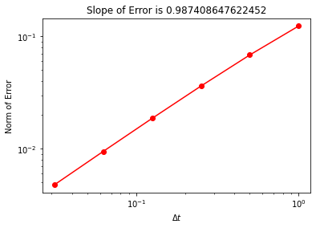

Forward and Backward Euler Methods
Contents
Forward and Backward Euler Methods#
CBE 20258. Numerical and Statistical Analysis. Spring 2020.
© University of Notre Dame
Reference: Chapter 17 in McClarren.
Learning Objectives#
After studying this notebook, completing the activties, and attending class, you should be able to:
Explain the difference between forward and backward Euler methods to approximate solutions to IVP.
Ease to implement, computational expense (how does this relate to explicit versus implicit?)
Understand how step size impacts the accuracy of the approximation.
# import libraries
import numpy as np
import matplotlib.pyplot as plt
from matplotlib.patches import Polygon
Main Idea#
In the next few notebooks, we will discuss techniques to compute approximate solutions to initial value problems (IVP). Every IVP has two parts:
System of differential equations.
Initial conditions that specify the numeric value for each different state at \(t=0\).
Let’s consider the generic, first-order initial value problem given by
where \(f(y,t)\) is a function that in general depends on \(y\) and \(t\). Typically, we’ll call \(t\) the time variable and \(y\) our solution. For a problem of this sort we can simply integrate both sides of the equation from \(t=0\) to \(t=\Delta t\), where \(\Delta t\) is called the time step. Doing this we get
These next few notebooks focus on solving this problem. You’ll notice a lot of similarities to notebooks 01-04 in this chapter, involving numeric integration, as integrals and differential equations are closely related.
Forward (Explicit) Euler#
Main Idea#
Let’s numerically approximate the above integral! One rule that is so basic that we didn’t talk about it in the chapters on numerical integration is the left-hand rectangle rule. Here we estimate the integral as
Graphically, this looks like
#graphical example
f = lambda x: (x-3)*(x-5)*(x-7)+110
x = np.linspace(0,10,100)
plt.plot(x,f(x),label="f(x)",color="blue")
ax = plt.gca()
a = 2
b = 8
verts = [(a,0),(a,f(a)), (b,f(a)),(b,0)]
poly = Polygon(verts, facecolor='0.9', edgecolor='k')
ax.add_patch(poly)
ax.set_xticks((a,b))
ax.set_xticklabels(('0','$\Delta t$'))
plt.xlabel("t")
plt.ylabel("f(t)")
plt.title("Left-hand Rectangle Rule")
plt.show()

This figure demonstrates why the name left-hand rectangle rule is used: the area under the curve is estimated as a rectangle that touches the curve at the left endpoint of the integral bounds.
Putting this together gives us $\(y(\Delta t) = y(0) + \Delta t f(y(0), 0).\)$
This will give an approximate value of the solution \(\Delta t\) after the initial condition. If we wanted to continue out to later time we could apply the rule again repeatedly. To do this we’ll define the value of \(y\) after \(n\) timesteps, each of width \(\Delta t\) as
Using this we can write the solution using the left-hand rectangle rule for integration as
This method is called the explicit Euler method or the forward Euler method. The method is said to be explicit because the update is defined by the value of the solution at time \(t^n\).
Let’s say we want to numerically approximate
from time \(t=0\) to \(t=a\). But we want want to know more than just \(y(t=a)\). We want to compute \(y(t)\) at \(N=10\) intermediate points along the way. In other words, we want to compute \(y(t=0.1a\)), \(y(t=0.2a)\), etc.
How can we do this with the explicit Euler method? We could set \(\Delta t = 0.1a\) and apply the formula
\(N\) times for \(n=1\) to \(n=N\).
Generalization and Python Implementation#
Home Activity
Write psuedocode for a Python function with four inputs: a function to evaluate the right-hand side of the differential equation, i.e., \(f(y,t)\), the initial condition \(y_0\), the time step \(\Delta t\), and the number of timesteps \(N\). Your function should use the forward Euler method to estimate \(y(t=\Delta t)\), \(y(t=2 \Delta t)\), …, \(y(t=N \Delta t)\). Your function should return two numpy arrays: one for time \(t\) and one for \(y\). This is excellent practice for the next exam. Converting a list of instructions into pseudocode is a key skill we teach (and assess) in this class.
We now define a Python function that for a given right-hand side, initial condition, and time step and number of time steps, \(N\), performs the forward Euler method. This function will take the name of the function on the right-hand side as an input.
Class Activity
Trade pseudocode with a partner. Compare your partner’s pseudocode to the Python code below. Offer your partner one piece of constructive feedback.
Home Activity
Complete the function forward_euler by filling in the missing line. Hint: The equation \(y^{n+1}=\) … in the reading is important.
def forward_euler(f,y0,Delta_t,numsteps):
"""Perform numsteps of the forward euler method starting at y0
of the ODE y'(t) = f(y,t)
Args:
f: function to integrate takes arguments y,t
y0: initial condition
Delta_t: time step size
numsteps: number of time steps
Returns:
a numpy array of the times and a numpy
array of the solution at those times
"""
# convert to integer
numsteps = int(numsteps)
# initialize vectors to store solutions
y = np.zeros(numsteps+1)
# compute time
t = np.arange(numsteps+1)*Delta_t
# copy initial condition
y[0] = y0
# loop over timesteps
for n in range(1,numsteps+1):
# Compute y[n]. Hint: You only need to write a single line of Python code.
# Add your solution here
return t, y
Test Problem#
We created a function. Now let’s test this on a simple problem:
Let’s compare the exact solution to the forward Euler solution with a time step of 0.1.
RHS = lambda y,t: -y
Delta_t = 0.1
t_final = 2.0
t,y = forward_euler(RHS,1,Delta_t,t_final/Delta_t)
plt.plot(t,y,'-',label="Forward Euler",color="blue",marker="o",markersize=4)
t_fine = np.linspace(0,t_final,100)
plt.plot(t_fine,np.exp(-t_fine),label="Exact Solution",color="black")
plt.xlabel("t")
plt.ylabel("y(t)")
plt.legend()
plt.title("Solution with $\Delta t$ = " + str(Delta_t))
plt.show()

That looks pretty close. The numerical solution appears to be slightly below the exact solution, but the difference appears to be small.
Your function forward_euler works if it computes the following values for the test problem:
t |
y |
|---|---|
0.0 |
1.00000 |
0.1 |
0.90000 |
0.2 |
0.81000 |
0.3 |
0.72900 |
0.4 |
0.65610 |
0.5 |
0.59049 |
0.6 |
0.53144 |
0.7 |
0.47830 |
0.8 |
0.43047 |
0.9 |
0.38742 |
1.0 |
0.34868 |
1.1 |
0.31381 |
1.2 |
0.28243 |
1.3 |
0.25419 |
1.4 |
0.22877 |
1.5 |
0.20589 |
1.6 |
0.18530 |
1.7 |
0.16677 |
1.8 |
0.15009 |
1.9 |
0.13509 |
2.0 |
0.12158 |
# Print the values for t and y in a nice table
print("| t \t| y |")
print("| - \t| - |")
for i in range(len(t)):
print("| {0:.1f} \t| {1:0.5f} |".format(t[i],y[i]))
| t | y |
| - | - |
| 0.0 | 1.00000 |
| 0.1 | 0.90000 |
| 0.2 | 0.81000 |
| 0.3 | 0.72900 |
| 0.4 | 0.65610 |
| 0.5 | 0.59049 |
| 0.6 | 0.53144 |
| 0.7 | 0.47830 |
| 0.8 | 0.43047 |
| 0.9 | 0.38742 |
| 1.0 | 0.34868 |
| 1.1 | 0.31381 |
| 1.2 | 0.28243 |
| 1.3 | 0.25419 |
| 1.4 | 0.22877 |
| 1.5 | 0.20589 |
| 1.6 | 0.18530 |
| 1.7 | 0.16677 |
| 1.8 | 0.15009 |
| 1.9 | 0.13509 |
| 2.0 | 0.12158 |
# Removed autograder test. You may delete this cell.
Impact of Step Size on Integration Error#
We could re-do this with different size time steps and compare the solutions as a function of \(\Delta t\).
RHS = lambda y,t: -y
Delta_t = np.array([1.0,.5,.25,.125,.0625,.0625/2])
t_final = 2
error = np.zeros(Delta_t.size)
t_fine = np.linspace(0,t_final,100)
count = 0
for d in Delta_t:
t,y = forward_euler(RHS,1,d,t_final/d)
plt.plot(t,y,label="$\Delta t$ = " + str(d))
error[count] = np.linalg.norm((y-np.exp(-t)))/np.sqrt(t_final/d)
count += 1
plt.plot(t_fine,np.exp(-t_fine),linewidth=3,color="black",label="Exact Solution")
plt.xlabel("t")
plt.ylabel("y(t)")
plt.legend()
plt.title("Solution with $\Delta t$ = " + str(Delta_t))
plt.show()
plt.loglog(Delta_t,error,'o-',color="blue")
slope = (np.log(error[-1]) - np.log(error[-2]))/(np.log(Delta_t[-1])- np.log(Delta_t[-2]))
plt.title("Slope of Error is " + str(slope))
plt.xlabel("$\Delta t$")
plt.ylabel("Norm of Error")
plt.show()


Notice that the error indicates that this is a first-order method in \(\Delta t\): when I decrease \(\Delta t\) by a factor of 2, the error decreases by a factor of 2. In this case we measured the error with a slightly different error norm: $\(\mathrm{Error} = \frac{1}{\sqrt{N}}\sqrt{\sum_{n=1}^{N} \left(y^n_\mathrm{approx} - y^n_\mathrm{exact}\right)^2},\)\( where \)N$ is the number of steps the ODE is solved over.
Home Activity
For this test problem, why does the numeric solution always appear to underestimate the exact solution? Why is the approximation worse with larger \(\Delta t\). Write 2 or 3 sentences below.
Home Activity Answer:
Class Activity
Discuss your answer with a partner.
Backward (Implicit) Euler#
Main Idea#
We could use a different method to integrate our original ODE rather than the left-hand rectangle rule. An obvious alternative is the right-hand rectangle rule:
This method is called the backward Euler method or the implicit Euler method. Graphically, this method looks like:
#graphical example
f = lambda x: (x-3)*(x-5)*(x-7)+110
x = np.linspace(0,10,100)
plt.plot(x,f(x),label="f(x)",color="blue")
ax = plt.gca()
a = 2
b = 8
verts = [(a,0),(a,f(b)), (b,f(b)),(b,0)]
poly = Polygon(verts, facecolor='0.9', edgecolor='k')
ax.add_patch(poly)
ax.set_xticks((a,b))
ax.set_xticklabels(('0','$\Delta t$'))
plt.xlabel("t")
plt.ylabel("f(t)")
plt.title("Right-hand Rectangle Rule")
plt.show()

It is implicit because the update is implicitly defined by evaluating \(f\) with the value of \(y\) we’re trying to solve for. That means the update needs to solve the equation
using a nonlinear solver (unless \(f\) is linear in \(y\)). Therefore, this method is a bit harder to implement, but still fairly simple.
Home Activity
Spend 5 minutes reviewing your notes from the Chapter 4 Newton Methods notebooks.
The main algorithm to apply forward and backward Euler to a problem is essentially the same. With forward Euler, we could explicitly compute the next step \(y^{n+1}\) with a simple formula. For backward Euler, we need to solve a system of equations.
Python Implementation#
Home Activity
Complete the function below. In the commented out spot, you’ll need to solve a nonlinear equation to calculate \(y^{n+1}\). Hints: You want to write two lines of code. The first line will use a lambda function to define the nonlinear equation to be solved. The second line will call inexact_newton to solve the system and store the answer in y[n]. Read these instructions again carefully.
def inexact_newton(f,x0,delta = 1.0e-7, epsilon=1.0e-6, LOUD=False):
"""Find the root of the function f via Newton-Raphson method
Args:
f: function to find root of
x0: initial guess
delta: finite difference parameter
epsilon: tolerance
Returns:
estimate of root
"""
x = x0
if (LOUD):
print("x0 =",x0)
iterations = 0
while (np.fabs(f(x)) > epsilon):
fx = f(x)
fxdelta = f(x+delta)
slope = (fxdelta - fx)/delta
if (LOUD):
print("x_",iterations+1,"=",x,"-",fx,"/",slope,"=",x - fx/slope)
x = x - fx/slope
iterations += 1
if LOUD:
print("It took",iterations,"iterations")
return x #return estimate of root
def backward_euler(f,y0,Delta_t,numsteps,LOUD=False):
"""Perform numsteps of the backward euler method starting at y0
of the ODE y'(t) = f(y,t)
Args:
f: function to integrate takes arguments y,t
y0: initial condition
Delta_t: time step size
numsteps: number of time steps
Returns:
a numpy array of the times and a numpy
array of the solution at those times
"""
numsteps = int(numsteps)
y = np.zeros(numsteps+1)
t = np.arange(numsteps+1)*Delta_t
y[0] = y0
for n in range(1,numsteps+1):
if LOUD:
print("\nt =",t[n])
# Add your solution here
if LOUD:
print("y =",y[n])
return t, y
Now let’s test our code using the simple problem from above.
RHS = lambda y,t: -y
Delta_t = 0.1
t_final = 0.4
t,y = backward_euler(RHS,1,Delta_t,t_final/Delta_t,True)
plt.plot(t,y,'-',label="Backward Euler",color="red",marker="s",markersize=4)
t_fine = np.linspace(0,t_final,100)
plt.plot(t_fine,np.exp(-t_fine),label="Exact Solution",color="black")
plt.xlabel("t")
plt.ylabel("y(t)")
plt.legend()
plt.title("Solution with $\Delta t$ = " + str(Delta_t))
plt.show()
t = 0.1
x0 = 1.0
x_ 1 = 1.0 - 0.1 / 1.1000000006700095 = 0.9090909091462818
It took 1 iterations
y = 0.9090909091462818
t = 0.2
x0 = 0.9090909091462818
x_ 1 = 0.9090909091462818 - 0.09090909091462818 / 1.0999999994210086 = 0.8264462809985739
It took 1 iterations
y = 0.8264462809985739
t = 0.30000000000000004
x0 = 0.8264462809985739
x_ 1 = 0.8264462809985739 - 0.0826446280998574 / 1.0999999994210086 = 0.7513148008682485
It took 1 iterations
y = 0.7513148008682485
t = 0.4
x0 = 0.7513148008682485
x_ 1 = 0.7513148008682485 - 0.07513148008682485 / 1.0999999994210086 = 0.6830134552988206
It took 1 iterations
y = 0.6830134552988206

Note
Important: Test your function with both LOUD=True and LOUD=False options. You should get the same answer.
Your function in the last home activity works if it computes the following values:
t |
y |
|---|---|
0.0 |
1.0 |
0.1 |
0.9090909091462818 |
0.2 |
0.8264462809985739 |
0.3 |
0.7513148008682485 |
0.4 |
0.6830134552988206 |
# Removed autograder test. You may delete this cell.
Impact of Step Size on Integration Error#
Perhaps you’ve detected a pattern. After we implement and test a numerical method, we often want to know how the error rate changes with step size. As a first look, let’s conduct a computational experiment with the same test problem.
RHS = lambda y,t: -y
Delta_t = np.array([1.0,.5,.25,.125,.0625,.0625/2])
t_final = 2
error = np.zeros(Delta_t.size)
t_fine = np.linspace(0,t_final,100)
count = 0
for d in Delta_t:
t,y = backward_euler(RHS,1,d,t_final/d)
plt.plot(t,y,label="$\Delta t$ = " + str(d))
error[count] = np.linalg.norm((y-np.exp(-t)))/np.sqrt(t_final/d)
count += 1
plt.plot(t_fine,np.exp(-t_fine),linewidth=3,color="black",label="Exact Solution")
plt.xlabel("t")
plt.ylabel("y(t)")
plt.legend()
plt.title("Solution with $\Delta t$ = " + str(Delta_t))
plt.show()
plt.loglog(Delta_t,error,'o-',color="red")
slope = (np.log(error[-1]) - np.log(error[-2]))/(np.log(Delta_t[-1])- np.log(Delta_t[-2]))
plt.title("Slope of Error is " + str(slope))
plt.xlabel("$\Delta t$")
plt.ylabel("Norm of Error")
plt.show()


A couple of things to notice from the plots: the backward Euler method approaches the solution from above, and the convergence of the error is at the same rate as forward Euler.
Home Activity
Exam Practice Question Above are two plots exploring how the step size impacts the error of the backwards Euler method for the test problem \(\dot{y} = e^{-t},~y(0)=1.0\). Write a sentence to answer each of the following questions.
Home Activity Questions and Answers
Why does this method always overapproximate the exact solution? Answer:
How does the error for this method scale with the step size \(\Delta t\)? Answer:
Class Activity
Share your answer with a partner.